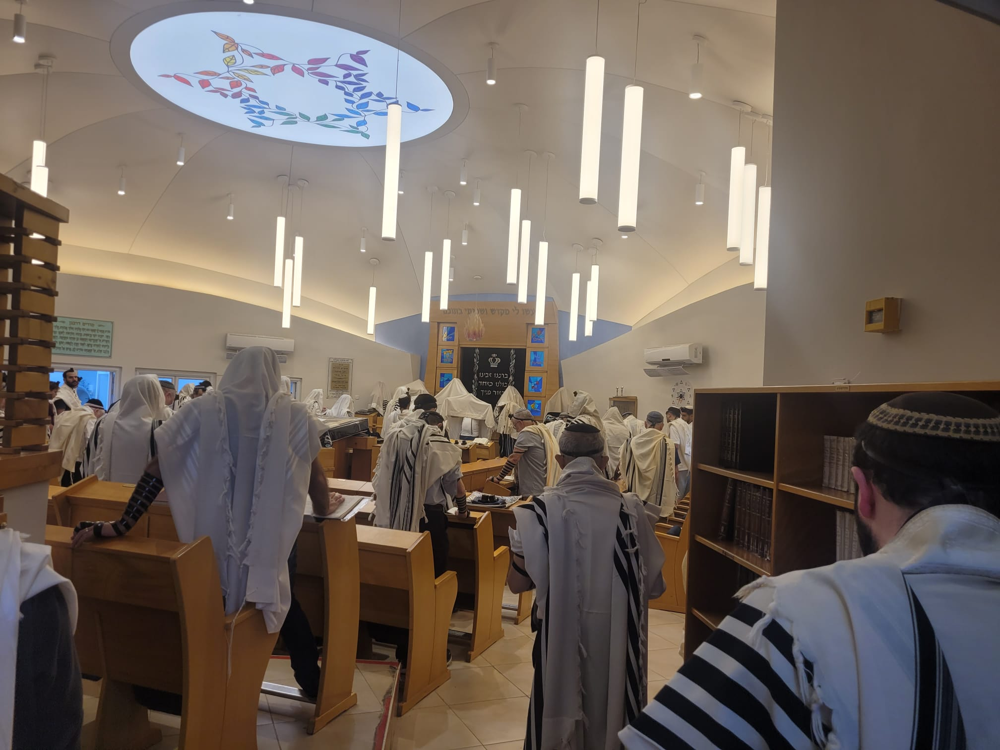
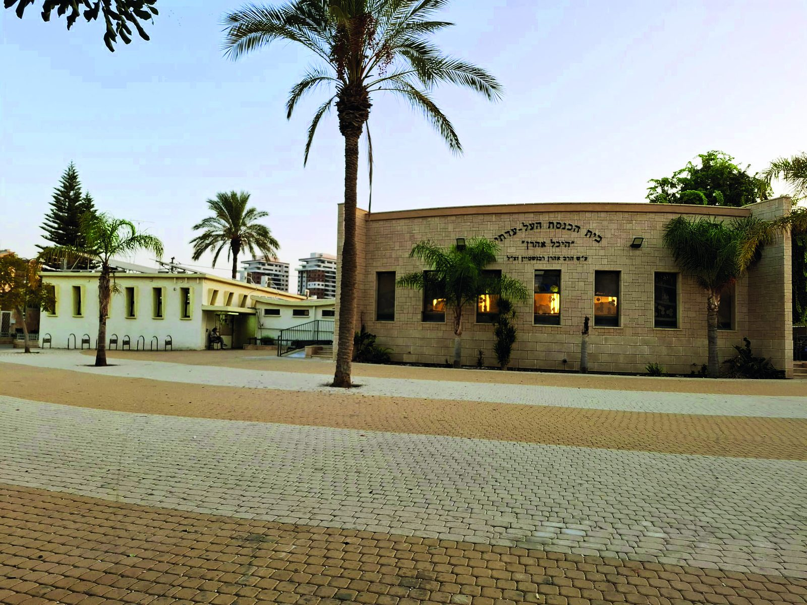
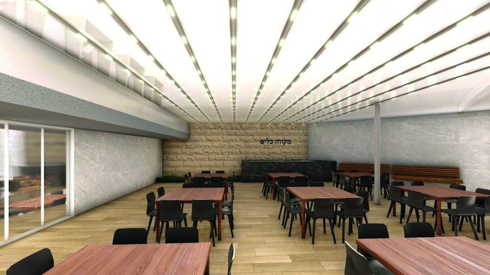
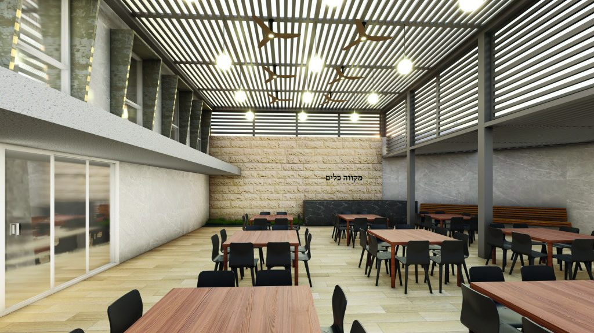

פרשת נח
ו' מרחשוון תשפ"ז · הפטרה: רני עקרה
הדלקת נרות
17:46
צאת השבת
18:47
ר"ת 19:19 · במוצאי שבת מתחילים לבקש "ותן טל ומטר לברכה"
הדף השבועי המלא (PDF)
סליחות בה"ב בשני ובחמישי: המנהג והסיפור שלנו איתו

קרוב לשישים שנה של תפילה, תורה וחסד בלב באר שבע. מאות מתפללים מדי יום, שבעה מנייני שחרית, ושיעורים לכל גיל.
שבעה מנייני שחרית, מנחה אחת וחמישה מנייני ערבית, כל יום. בימים שני וחמישי המניינים הראשונים מקדימים.
| מניין א' | 5:35 | ב', ה': 5:30 |
| מניין ב' | 6:00 | ב', ה': 5:40 |
| מניין ג' | 6:30 | |
| מניין ד' | 7:00 | |
| מניין ה' | 7:30 | |
| מניין ו' | 8:00 | |
| מניין ז' | 8:30 |
| מניין יחיד | 17:50 |
| מניין א' | 18:30 |
| מניין ב' | 19:45 |
| מניין ג' | 20:45 |
| מניין ד' | 21:45 |
| מניין ה' | 23:00 |
| פרשה / חג | תאריך | הדלקת נרות | צאת השבת |
|---|
שיעורים כל יום, בוקר וערב, ולוח שבועי לפי ימים. המחייב לשעות השבת הוא הדף השבועי.
תפילת ילדים בשבת, תלמוד תורה לבנים ולבנות מגן חובה עד ח', וחבורת נוער שבועית.
מזה שנים רבות, בכל שבת בבוקר בבית המדרש, בשעה 10:15. עם הפתעות לילדים.
בירורים ורישום: אצל גבי היין.
חבורה שבועית, כל יום שני בשעה 18:00 בבית הכנסת. מוביל: אריאל.
ילדי באר שבע מוזמנים להצטרף: אצלנו לומדים בשמחה, בכיף ובאהבת תורה. חדש: קבוצה לילדי גן חובה. להרשמה לוחצים על "הרשמה בוואטסאפ" ליד הכיתה.
כל שיעור 35 דקות. המסגרת מופעלת על ידי ת"ת הכיפה בשיתוף בית מוריה.
| כיתות | ימים | שעה | מקום | מלמד |
|---|---|---|---|---|
| א'-ב'הרשמה בוואטסאפ | א', ב', ד' | א', ד': 17:00-17:35 · ב': 17:35-18:10 | מקלט | הרב יחזקאל אהרוני |
| ג'-ד'הרשמה בוואטסאפ | א', ב', ד' | א', ד': 17:35-18:10 · ב': 17:00-17:35 | מקלט | הרב נהוראי גול |
| ה'-ו'הרשמה בוואטסאפ | א', ב', ד' | א', ד': 17:00-17:35 · ב': 17:40-18:15 | ספרייה | הרב יהודה רוזנברג |
| ז'-ט' | ג' | 19:00-19:35 | ספרייה | הרב יעקב מוסאי |
| כיתות | ימים | שעה | מקום | מלמדת |
|---|---|---|---|---|
| א'-ב'הרשמה בוואטסאפ | ב', ג', ה' | 17:00-17:35 | בית המדרש | רננה וסרטייל |
| ג'-ד'הרשמה בוואטסאפ | ב', ג', ה' | 17:00-17:35 | ספרייה | הודיה נוטמן (ביום שני: אליענה מאיר) |
| ה'-ו'הרשמה בוואטסאפ | א', ג', ד' | 18:15-18:50 | ספרייה | אורית אהרוני (ביום שלישי: אליענה מאיר) |
| ז'-ח' | ד' | 19:00-19:35 | ספרייה / בית המדרש | רעיה גולדשטיין |
| כיתות | ימים | שעה | מקום | מלמדת |
|---|---|---|---|---|
| גן חובההרשמה בוואטסאפ | ג', ה' | 17:35-18:10 | בית המדרש | אליענה מאיר |
בלב באר שבע, בירת הנגב, ניצב מאז תשכ"ז (1967) בית הכנסת העל-עדתי "הכיפה", אחד מסמליה הרוחניים והקהילתיים של העיר.
מאות מתפללים פוקדים אותו מדי יום: תפילות, שיעורי תורה ואירועים קהילתיים. הכיפה אינו רק מקום תפילה. הוא בית של חסד ושל ערבות הדדית: גמ"ח, עזרה למשפחות, ומקום שבו מתפללים מכל העדות עומדים יחד, "כל ישראל ערבים זה בזה".
ההיכל המרכזי קרוי "היכל אהרן" על שם הרב אהרן רבנשטיין זצ"ל, רב בית הכנסת במשך שנים רבות; לצידו בית המדרש "נתיבי עם". המבנה, כיפת בטון של האדריכל נחום זולוטוב, נחנך בכסלו תשל"א (1970).
רב הקהילה: הרב אהרן דרשביץ.
דמי חבר תשפ"ז: 1,300 ש"ח לבית אב. תשלום בצ'ק לפקודת "בית הכנסת העל עדתי", במזומן לגזבר, בהעברה בנקאית או בקישור התשלום. חברים שזקוקים להנחה פונים ליו"ר הוועד.
מקומות ישיבה קבועים: לפי סדר ההצטרפות לקהילה. פנייה לאחראי המקומות דרך הוועד.
החצר הפנימית של בית הכנסת כבר לא עונה על צרכי הציבור הרחב שפוקד את המקום. התוכנית: מתחם רב-תכליתי מקורה ונעים לתפילה, ללימוד ולאירועי קהילה, שירותים חדשים, הצללה ונגישות.
"זה הזמן לרומם את בית ה'. כל אחד מאיתנו יכול להיות שותף, על פי יכולתו ונדיבות ליבו, להפוך את החזון למציאות."
התרומה מוכרת לצרכי מס לפי סעיף 46. לקבלה: grosserfam@gmail.com
חוברת הקמפיין המלאה (PDF)



רחוב הצבי 22, שכונה ה', באר שבע.
HaKipa Synagogue · HaTsvi St 22, Be'er Sheva 8473349, Israel
בית הכנסת העל-עדתי, שכונה ה' לדוגמא, באר שבע (ע"ר) · עמותה 58-002982-5
שעה לא נכונה, שיעור שהשתנה, רעיון לאתר. כל הערה עוזרת.
כתבו לוועדעדכונים שוטפים: קבוצת וואטסאפ שקטה וקבוצת מייל, הצטרפות דרך הוועד.